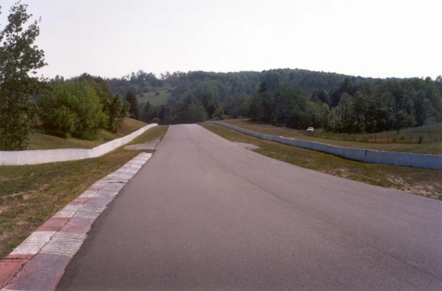
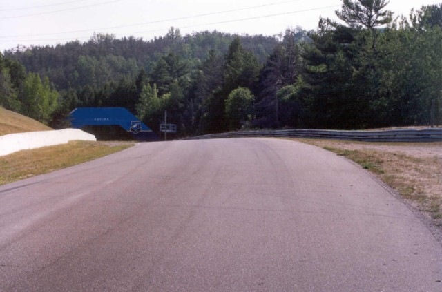
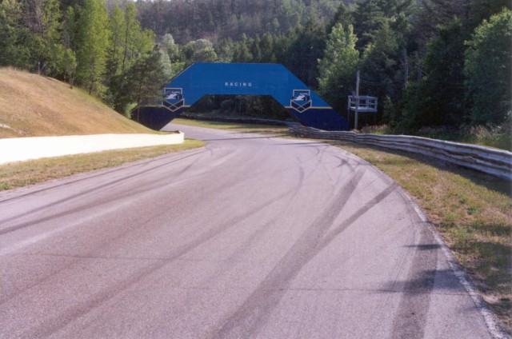
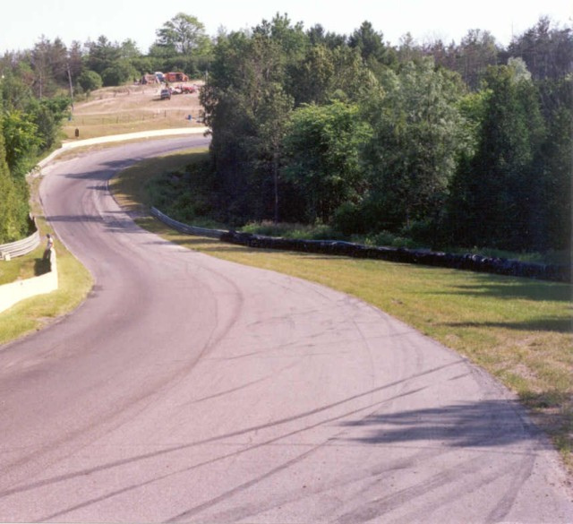
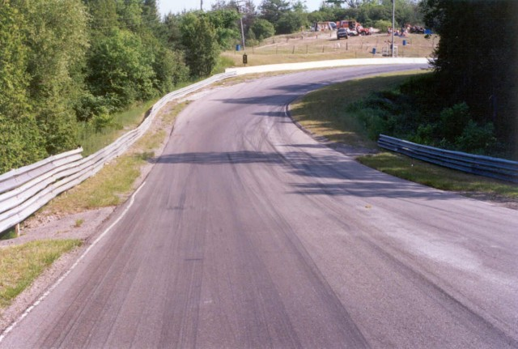

Numbers on the map are the turn numbers. Click hyperlinks above to view the photographs.
Mosport - Turn 4
|| Contents || Start Straight & Turn 1 | Turns 2 & 3 | Turn 4 | Turn 5 | Turns 6 & 7 | Turns 8, 9 & 10 || Home ||
Numbers on the map are the turn numbers. Click hyperlinks above to view the
photographs.
Return to racingcircuits.net's Photo Archive Main Index

11 - Turn 3 Exit

12 - Turn 4 Top

13 - Turn 4 Middle

14 - Turn 4 Bottom

15 - Turn 5 Approach
| << PREVIOUS PAGE |
| Photographs and Text ©Chris Mann. Reproduced here with kind permission. | Photographs #12 & #13 have
been digitally altered to remove tobacco advertising. |